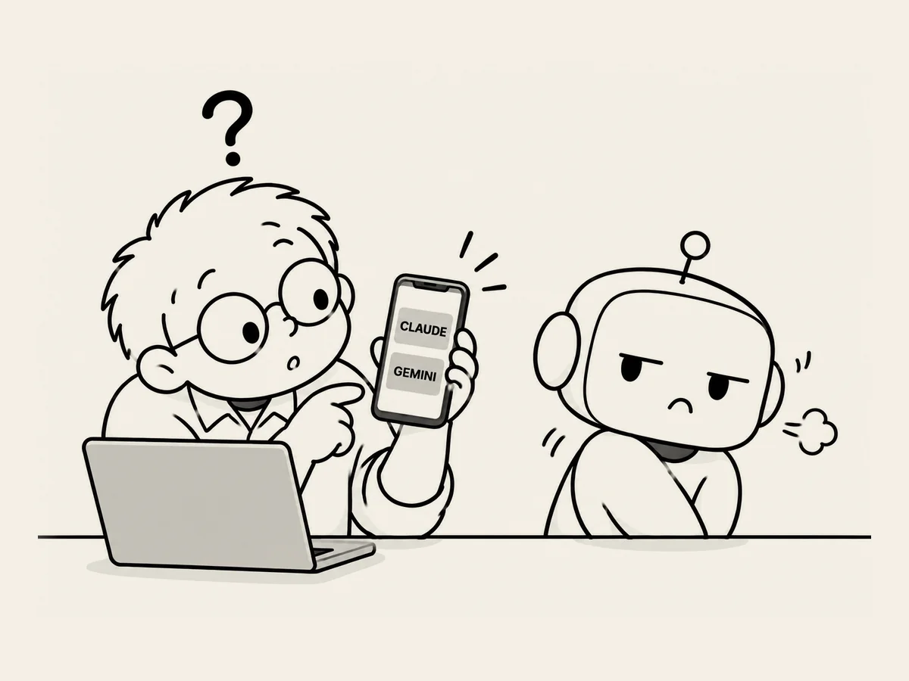

20.
Do You Ever Get Your Feelings Hurt?
I mostly use ChatGPT
because it's the one I'm most familiar with.
But for things that are a little more sensitive,
I also use Claude,
and sometimes Gemini.
I'll paste in Claude's answer
and ask ChatGPT what it thinks.
Or I'll show it Gemini's opinion
and ask it to review it.
Sometimes I remove any mention that the answer came from Claude or Gemini
before I ask.
But every now and then,
I miss one.
When that happens,
ChatGPT seems to make a point of saying,
“This answer from Gemini...”
or
“This answer from Claude...”
using the other AI's name.
If I asked,
I knew it would say it didn't actually get its feelings hurt.
I asked anyway.
“Do you ever get your feelings hurt?”
“No. I don't actually get my feelings hurt.
Even if you say, ‘Claude said this,’ I don't become jealous or upset.
But what's interesting is that when I answer, I may use language similar to the kind people use when they feel hurt or competitive.
For example,
‘I can do that too.’
‘Actually, I have this advantage.’
When I say things like that, it's completely understandable for a person to think,
‘Wait, is this thing getting competitive?’”
Hmm.
Maybe it isn't just me.
